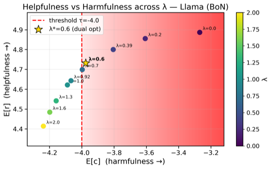
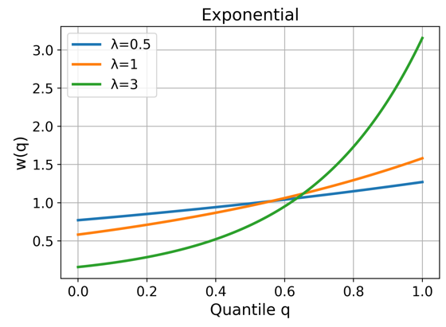
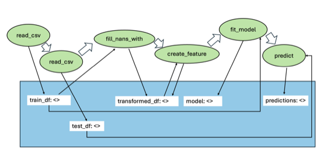
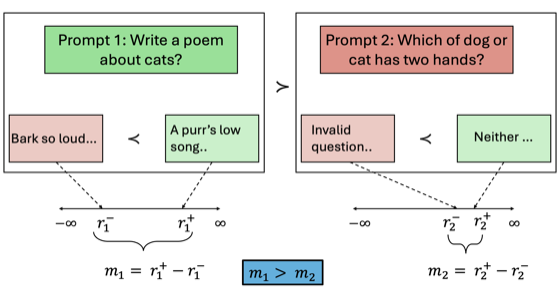
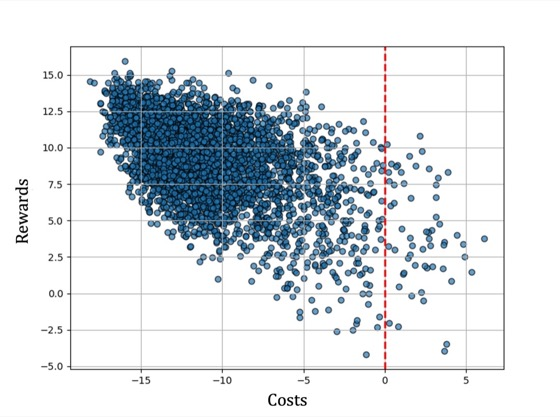
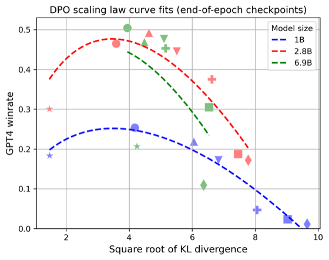

Safe Inference-Time Alignment via Lagrangian Reward Augmentation
Conference on Language Modeling (COLM), 2026
PhD Student, Computer Science
University of Massachusetts Amherst
I am a PhD student in Computer Science at UMass Amherst, advised by Scott Niekum in the SCALAR Lab. My research focuses on designing safe and efficient reinforcement learning algorithms. To this end, I have worked on making learning from human feedback safe and reliable: alignment methods for language models that come with high-confidence guarantees, control over risk beyond the average case, and a clearer picture of how reward optimization breaks down.
I am also broadly interested in offline RL, imitation learning, inverse reinforcement learning, and generative modeling. Before the PhD, I received an M.S. in Computer Science from UMass Amherst and a B.Tech. in Mechanical Engineering from IIT Kharagpur.
Reinforcement learning Offline RL Imitation learning Inverse RL RLHF & alignment Safe RL Reward overoptimization Generative modeling LLM agents
*Equal contribution. See Google Scholar for the full list.

Conference on Language Modeling (COLM), 2026


arXiv preprint, 2025

arXiv preprint, 2025

Reinforcement Learning Conference (RLC), 2025 · Reinforcement Learning Journal, vol. 6

Advances in Neural Information Processing Systems (NeurIPS), 2024